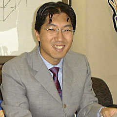
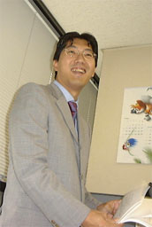
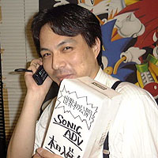
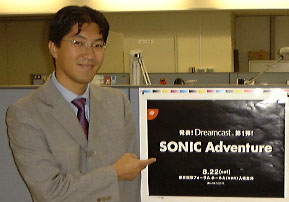

| 発表! ソニック制作発表会!! |
| イベント名： | 「ＳＯＮＩＣ Ａｄｖｅｎｔｕｒｅ 制作発表会」 |
| 日時： |
１９９８年８月２２日(土) 第１回 １０：００開場／１１：００開演 第２回 １３：３０開場／１４：３０開演 ※イベント内容は２回ともまったく同一のものです。 |
| 場所： | 東京国際フォーラム ホールＡ(有楽町) |
|
入場無料(チケット不要)。
ただし、ご来場順の入場につき、満員の際や開演後の入場に関しては、
お断りすることがありますので、ご了承ください。
入場者には、もれなくここでしか手に入らないお土産も用意しております。 | |
| コメント | ||
|  |
中 裕司 ソニックチーム プロデューサー | |
|
「ソニック＆ナックルズ」から早４年。ソニックチームが贈るＤｒｅａｍｃａｓｔ第１弾ソフトとして、ソニックの最新作を発表することになりました。今回は、初めてのお披露目の場所に、いつも一番応援してくれるユーザーのみなさんをご招待したいと思っています。 この発表の場に、ぜひ、みなさんも立ち会ってください。
| ||
|
竹崎さん ＣＳプロモーション部 | ||
|
ハードを発表するのはいいけどソフトがなけりゃただの箱でしょ。セガのソフトはどーなってんの？な〜んて、みなさんのご指摘を受けながらも今日まで沈黙を守ってきたのは、万を持して、みんなと一緒にこの発表会をやりたかったからなのだ。 | ||
| ちょっと対談 | |
|
「ソニックアドベンチャー制作発表会」開催にあたって
| |
|
竹＞ いよいよソニックチームのドリームキャスト第１弾ソフトを発表することになりましたね。
本家ソニックチームが制作するソニックの新作は９４年に発売されたメガドライブの「ソニック
＆ナックルズ」から４年ぶりになりますね、中さん。 中＞ ええ。ユーザーのみなさんからソニックの新作を作って欲しいという声をたくさんいただいて いましたが、ようやくその声におこたえできる時がやってきました。 竹＞ ソニックチームは今年の２月に「バーニングレンジャー」を発売したばかりだと思うのですが、 「ソニックアドベンチャー」の開発はいつから始まっていたのですか？ |
|
|  |
中＞ 実は今回の新作に関しては、サターンの「ナイツ」の開発終了直後から構想を始めていたん
です。 そして、せっかくソニックをやるんだったらあんなこともこんなこともやりたいという様々 なアイデアを盛り込んでいくうちに、だんだんとスケールの大きい作品になっていき、そのア イデアをそのまま実現するために、ドリームキャストで開発することになりました。 竹＞ ずばり、今度のソニックはどんなゲームになるのでしょう？
|
|
中＞ 今度のソニックは、今までにない「ゲームの未来基準」をお見せできるような、僕としても自
信たっぷりの仕上がりになりそうです。ただ、せっかく発表会をやりますので、今日のところ
はこれ以上お話できないんですけど（笑）。あまり内容を話してしまうと、８月22日の発表会
の意味がなくなっちゃいますからね。
竹＞ それはそうですよね（笑）。
| |
|
中＞ はい。発表会は８月22日の土曜日に、有楽町の東京国際フォーラムＡホールで行います。
せっかくソニックを発表する機会をいただけたので、いつも一番熱心に応援してくれるユー
ザーのみなさんにその場に立ち会っていただきたいと思い、プレスや関係者以外の方でも
参加できる発表会にしました。 ２回の公演を予定しているんですが、１回目はユーザーのみなさんだけに入っていただいて、 関係者は２回目に入ってもらおうか、なんていうことも考えています。 |

|
|
それと、セガ・パートナ
ーズの方には優先的に入場していただけるシステムなどもとれればいいなぁとスタッフと一
緒に考えています。 竹＞ 東京国際フォーラムといえば、駅のそばで交通にとても便利ですよね。東京駅から１駅目の 有楽町駅のそばということもあって、夏休みを利用して東京に来ていただいた方にも分かり やすいですしね。 中＞ ええ。８月22日という日程も、夏休み中の土曜日という観点から決定しました。 少しでも完成形に近いものを見ていただくには、少しでも後の方がいいのですが、その次の 週末になると、夏休み最後の土日になってしまって、皆さん宿題の最後の追い込みで忙しい ですからね、きっと（笑）。 |
|
 ほっ、本部に連絡だっ！ |
竹＞ 発表会は、いったいどんな内容になるのですか？ 中＞ 内容は、せっかく来ていただいた方の期待を裏切らないように、なるべく良いものにしようと 今も多くのスタッフと一緒に話し合いをおこなっている最中です。 また、来ていただいた方への記念になるおみやげも現在、いろいろ検討中です。 期待していて下さい。 竹＞ 当日は混雑が予想されると思うのですが、チケット予約などはしなくても大丈夫なのです か？ |
|
中＞ 誰でも気軽に遊びに来ていただけるために、先行予約などは行っていません。東京国際フ
ォーラムは一度に５千人入る会場なので、２回で１万人ですよね。僕は、そんなに人が来て
くれるのかなぁ…なんて心配しているのですが（笑）。 でももし万が一、１回目が満席になってしまったら、その後に並んでいる方には、２回目のチ ケットをお渡しすることになると思います。 入場無料の自由来場型イベントなので、実際のところ何人の人に来ていただけるのか分か らないのですが、せっかく来ていただいた方々には、できるかぎり親切な対応をとれるよう、 これから８月２２日までは精一杯の準備をしていきたいと思っています。
竹＞ 今から８月２２日が楽しみですよね。
中＞ 小さなお子さんから、今までソニックを応援してきてくれたユーザーの皆さんまで、きっと満
足していただける発表会になると思います。 ...ステージにあがるのは嫌だなぁ（笑）。  |
|
|
さあ、この先の情報は今週、来週のゲーム専門誌をチェック！ ７月２６日のファミ通のイベント「ゲームサーカス５００ ｉｎ Ａｋｉｈａｂａｒａ」 にも中さんが登場！さらに深い情報が聞けるかも！ | |
| SONIC TEAM INFORMATION | |